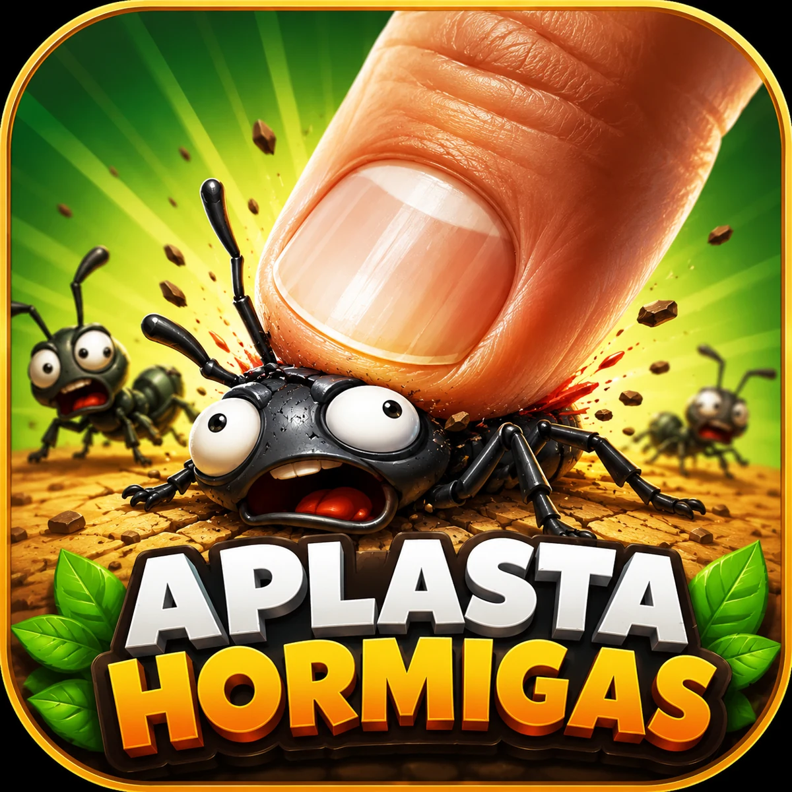

⚡
Controles simples
Toca la pantalla con precisión para detener la invasión antes de que sea demasiado tarde.
Enfrenta oleadas cada vez más intensas, desbloquea ayudas y supera niveles llenos de sorpresas. Fácil de aprender, difícil de dominar.

Una experiencia ágil pensada para móviles, con progresión constante y desafíos que mantienen cada partida fresca.
Toca la pantalla con precisión para detener la invasión antes de que sea demasiado tarde.
Las oleadas aumentan en velocidad, cantidad y variedad conforme avanzas.
Identifica amenazas prioritarias y reacciona rápido ante eventos inesperados.
Obtén recompensas y utiliza ayudas para superar los niveles más exigentes.
Efectos y señales sonoras hacen que cada impacto y cada alerta se sientan mejor.
Diseñado para ofrecer una experiencia fluida y legible en teléfonos y tabletas.
Detecta por dónde aparecen las hormigas y anticipa su movimiento.
Toca con rapidez y precisión para sumar puntos y proteger tu zona.
Usa monedas y ayudas para controlar las oleadas más complicadas.
Completa el objetivo del nivel y prepárate para un nuevo desafío.
La versión para Google Play se encuentra en proceso de publicación. Tu participación y comentarios ayudarán a mejorar el equilibrio, rendimiento y experiencia del juego.